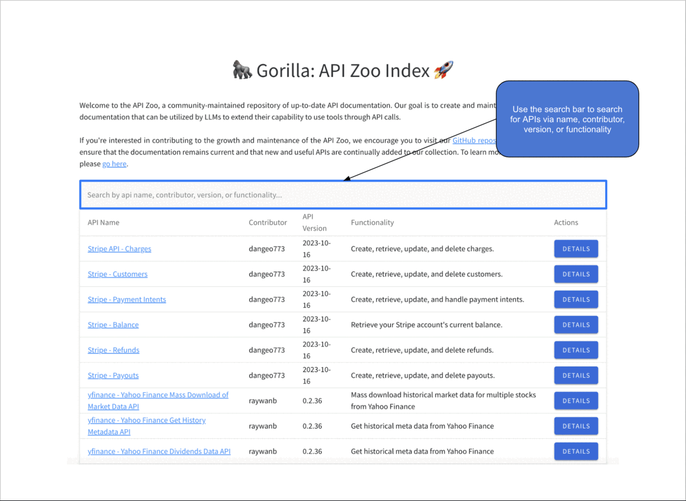
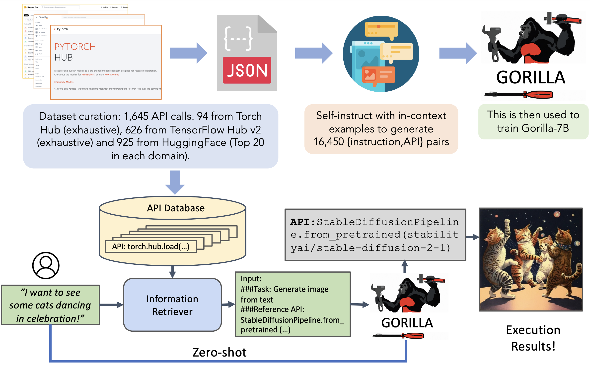

🦍 Gorilla: Large Language Model Connected with Massive APIs
Blog 6: The API Zoo
The API Zoo: A Keystone for Building API-connected LLMs
The rapid pace at which API documentation evolves presents a significant challenge for the development of LLMs that use tools via API calls. Keeping up with the latest changes, deprecations, and new releases is difficult, which necessitates a dynamic repository that can keep pace with these constant updates. The API Zoo - a community-maintained repository of up-to-date API documentation - aims to address this challenge. This blog explores some of the benefits of the API Zoo, such as its role in API discovery, adapting to evolving API documentation, serving as a great data source for model training, and facilitating Retrieval Aware Training (RAT) and retrieval mode inference.
Enhancing API Discovery
The API Zoo serves as an important resource for the discovery of APIs and addresses a critical gap in the development of LLMs that use external tools. Traditionally, developers and researchers have to go through the time-consuming process of sifting through fragmented documentation across the internet to find suitable APIs for their projects. The API Zoo consolidates this information into a single searchable index, which helps streamline the process of identifying relevant APIs.
By offering a comprehensive, searchable index of APIs across various domains and functionalities, the API Zoo not only saves time but also facilitates the exploration of new possibilities for enhancing model capabilities. Upon selecting a specific API from the index, users are directed to a detailed page that provides valuable information for integration, including an overview of the API's functionality, usage examples, argument specifications, and a Github icon that links back to the associated API Zoo repo page.

Use the API Zoo Index webpage to search for APIs, and learn about the functionality, associated API calls, and example usage of specific APIs.
We hope for this centralized API Zoo repository to be instrumental in helping simplify the process of finding and integrating new APIs, and in encouraging the adoption of APIs via LLMs in novel contexts, expanding the possibilities of what LLMs can achieve.
Keeping Up with the Evolving Nature of API Documentation
API documentation is constantly changing, with updates, deprecations, and new releases becoming the norm rather than the exception. This dynamic nature creates a significant challenge for LLMs, as the frequency of documentation updates outpaces the retraining or fine-tuning schedule of LLMs. The API Zoo addresses this challenge by providing a platform for continuous community contributions, which helps ensure that the documentation remains current. This collaborative approach not only keeps the repository up-to-date but also reflects the collective knowledge and expertise of the community, enriching the quality of the documentation available for LLMs. The adaptability of the API Zoo to changes in API documentation ensures that LLMs can maintain their efficacy and accuracy, enabling them to remain reliable tools despite the constantly evolving APIs.

APIs evolve frequently! For example, in just one day, the AWS APIs underwent over 30 modifications.
A Rich Data Source for Model Training
The API Zoo offers a great source of structured data for those interested in training their own LLMs to use tools via API calls. Each API documentation added to the API Zoo follows a strict format, which contains fields for arguments, versioning, example usage, and more. You can learn more about the API documentation format used by the API Zoo, as well as how to contribute to the API Zoo, here. Thus, the detailed API data contained in the API Zoo can be used to teach LLMs about the syntax and semantics of APIs across a wide range of domains, improving their ability to interact with external services effectively. Furthermore, the inclusion of meta-data, such as performance metrics for models exposed via ML APIs, and functional descriptions enables LLMs trained on the API Zoo to make informed decisions about which API to call under different circumstances. The API Zoo, therefore, not only facilitates the discovery and integration of APIs but also provides a great source of training data, which can be used to help develop more capable models.
Facilitating Retrieval Mode Inference
Another benefit of the API Zoo lies in its application to Retrieval Aware Training (RAT), a novel training methodology that ensures LLMs remain up-to-date with and adapt to the latest API documentation, and retrieval mode inference. You can learn more about RAT in this great blog post! In short, RAT involves appending additional supporting API documentation to the user's prompt in the following format: "Use this API documentation for reference: <retrieved_API_doc_JSON>". The goal of this is to teach the LLM to effectively utilize the provided supporting API documentation. Then, in retrieval mode inference, a retriever is used to append the most up-to-date API documentation from the API Zoo to the user prompt, instructing Gorilla to reference this information when making API calls. This approach has several profound implications: it enables the adaptation to documentation changes, enhances model performance compared to in-context learning, and reduces of hallucination error.

Gorilla can be used for inference in two modes: zero-shot and retrieval. In retrieval mode, the retriever first retrieves the most up-to-date API documentation stored in the API Zoo.
The use of RAT and Gorilla's retrieval mode inference, underpinned by the API Zoo, represents a step forward in developing LLMs that are robust to frequent changes in the information they are designed to process (in this case, API documentation). It not only enhances Gorilla's adaptability and accuracy but also paves the way for more reliable and robust ML systems that can seamlessly interact with a constantly changing ecosystem of APIs.
Conclusion
By facilitating the discovery of APIs, maintaining a current and comprehensive database of API documentation, providing a rich data source for model training, and enabling retrieval mode inference, the API Zoo serves as a foundational component of the larger Gorilla ecosystem. As we continue to explore the vast potential of connecting LLMs to external tools using APIs, we hope that the API Zoo will play a pivotal role in this exciting field. To explore the current state of the API Zoo repository, you can visit the API Zoo Index page here. To learn more about how to contribute to the API Zoo, please visit our github repo.